<ion-header>
  <ion-navbar style="background-color: #212121;">
    <ion-buttons start style="background-color: transparent;height: 80%;position: absolute;right: 1rem;margin-top: 3%;">
      <button ion-button (click)="dismiss()"  *ngIf="modelCheck">
        <ion-icon name="md-close" style="color: white;"></ion-icon>
      </button>
    </ion-buttons>
    <ion-buttons left style="position: absolute;">
      <button ion-button menuToggle>
        <ion-icon name="menu" style="font-size: 3rem;color: white;"></ion-icon>
      </button>
    </ion-buttons>
    <ion-title align="center"></ion-title>
  </ion-navbar>
</ion-header>

<ion-content padding class="parallax">
  <ion-refresher (ionRefresh)="doRefresh($event)" style="background-color: transparent;">
    <ion-refresher-content></ion-refresher-content>
  </ion-refresher>
  <ion-grid>
    <ion-row>
      <ion-col col-12>
        <button ion-button class="btn-login" block (click)="presentModal()"><ion-icon name="search" style="margin-right: 2%;"></ion-icon> ค้นหาอุปกรณ์</button>
      </ion-col>
      <ion-col col-6 *ngFor="let device of devices">
        <ion-card class="cards-list" style="background-color: rgba(100, 100, 100, 0.7) !important;height: 160px;" (press)="holdCount(device.private_key)">
          <ion-list style="background-color: rgba(0, 0, 0, 0.3) !important;">
            <ion-item style="background-color: rgba(0, 0, 0, 0.1) !important;">
              <ion-row text-center>
                <ion-col col-12>
                  
                </ion-col>
                <ion-col col-12 style="color: white;font-size: 14px;">
                  {{device.private_key}}
                </ion-col>
              </ion-row>
            </ion-item>
            <!--<ion-item-sliding #item style="background-color: rgba(0, 0, 0, 0.1) !important;">-->
              <!--<ion-item style="background-color: rgba(0, 0, 0, 0.1) !important;">-->
                <!--<ion-row text-center>-->
                  <!--<ion-col col-12>-->
                    <!---->
                  <!--</ion-col>-->
                  <!--<ion-col col-12 style="color: white;">-->
                    <!--{{device.private_key}}-->
                  <!--</ion-col>-->
                <!--</ion-row>-->
              <!--</ion-item>-->
              <!--<ion-item-options side="right">-->
                <!--<button ion-button color="danger"><ion-icon name='trash' item-start></ion-icon>ลบ</button>-->
                <!--<button ion-button color="primary"><ion-icon name='create' item-start></ion-icon>แก้ไข</button>-->
              <!--</ion-item-options>-->
            <!--</ion-item-sliding>-->
          </ion-list>
        </ion-card>
      </ion-col>
      <ion-col col-6>
        <ion-card class="cards-list" style="background-color: rgba(100, 100, 100, 0.7) !important;height: 160px;">
          <ion-list style="background-color: rgba(0, 0, 0, 0.3) !important;height: 160px;">
            <ion-row text-center>
              <ion-col col-12 (click)="doPrompt()">
                <ion-icon name="add" style="font-size: 5rem;margin-top: 5rem;"></ion-icon>
              </ion-col>
            </ion-row>
          </ion-list>
        </ion-card>
      </ion-col>
    </ion-row>
  </ion-grid>
</ion-content>

<!--<ion-card class="card-radius">-->
  <!---->
  <!--<ion-card-content>-->
    <!--<ion-card-title>-->
      <!--<ion-row>-->
        <!--<ion-col col-12>-->
          <!--<button ion-button class="btn-login" block (click)="presentModal()"><ion-icon name="search"></ion-icon>ค้นหาอุปกรณ์</button>-->
        <!--</ion-col>-->
        <!--<ion-col>-->
          <!--<button ion-button class="btn-login" block (click)="doPrompt()">ลงทะเบียนอุปกรณ์</button>-->
        <!--</ion-col>-->
      <!--</ion-row>-->
    <!--</ion-card-title>-->
  <!--</ion-card-content>-->
  <!--<ion-row>-->
    <!--<ion-col>-->
      <!--<p>1. เปิดอุปกรณ์ Exprefrig</p>-->
      <!--<p>2. เลือก "ค้นหาอุปกรณ์" เพื่อเชื่อมต่อ</p>-->
      <!--<p>3. ตั้งค่าในตัวอุปกรณ์ให้ครบและ copy private_key ไว้</p>-->
      <!--<p>4. นำ private_key ไปใส่ในหน้าถัดไป</p>-->
    <!--</ion-col>-->
  <!--</ion-row>-->
<!--</ion-card>-->
